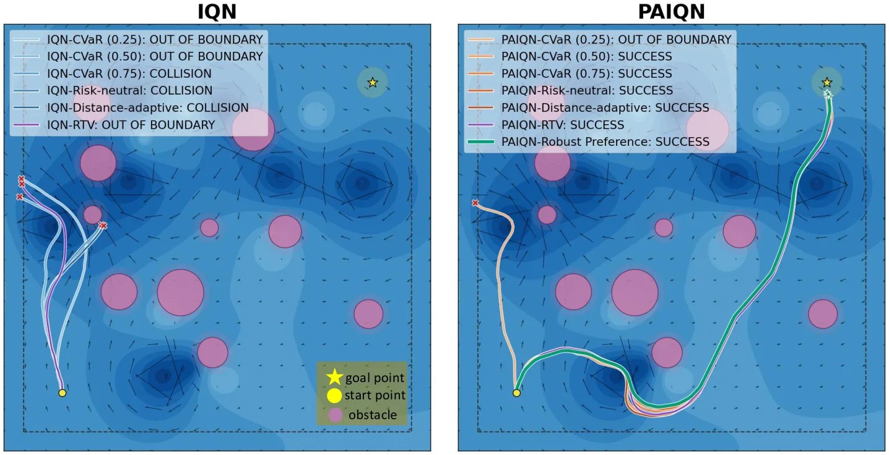
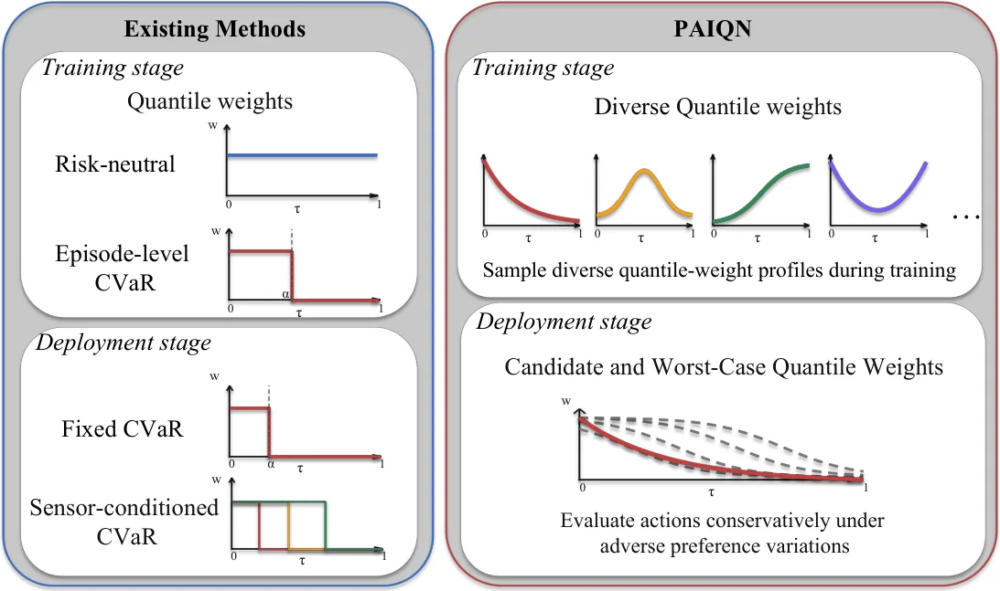
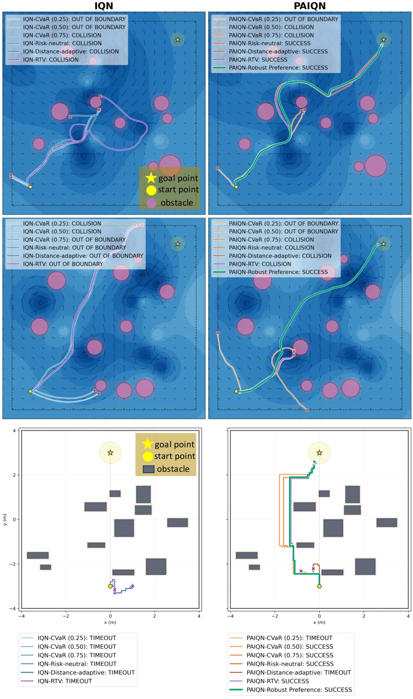

偏好增强的分布式强化学习：面向风险敏感导航
Preference-Augmented Distributional Reinforcement Learning for Risk-Sensitive Navigation
把标量 CVaR 换成“分位权重分布”，训练时退火式偏好探索、部署时 KL 鲁棒最坏偏好。海上 ASV 硬难度：风险中性 IQN 成功率 73.3%/碰撞 27.3%，PAIQN+鲁棒偏好 86.7%/13.3%；中等 80.7%→90.0%；室内 70.17%→84.33%。代价是 CVaR=0.25 这种极保守设置反而更差（8.7%），作者归因于只用最低四分之一分位、丢弃了其余分布信息。
success
collision
latency
作者、单位与技术谱系 · Research context
作者与单位
研究脉络
作者单位与通讯作者由论文首页标注；团队前作的两条 arXiv 编号来自本文参考文献，属于可核对的同作者谱系，不据此推断导师关系。
方法本质拆解 · What actually changed
是不是微调？
从头训练 IQN（分布式 RL），不是微调预训练策略；每个决策重新采样分位权重，退火幅度随全局交互步按 t^−(1+η) 衰减。训练超参沿用前作：ε 从 1 线性退到 0.05，Δ₀=5×10³、η=0.001、Dirichlet 浓度 0.05。
加了什么约束？
训练侧的约束是“偏好扰动最终消失”：权重被写成均匀权重与采样偏好的凸组合，Δ_t→0 时回到风险中性，Theorem 1 给出额外 Bellman 误差上界 2γDΔ_t。部署侧约束是 KL(w||uniform)≤ρ，把偏好限制在均匀分布附近的一个凸集内。
推理/后端做了什么？
推理时关闭随机探索与偏好采样，对每个动作在 64 个固定中点分位上查询 IQN，然后解一个带 KL 约束的凸优化：KKT 给出 softmax 权重，温度用倍增括住 + 二分求根，每个动作独立求解；没有额外网络，也没有模型预测控制的 rollout。
方法本质是什么？
把“风险偏好”从标量 α 换成回报分位上的权重分布，使训练可以覆盖比 CVaR 族更丰富的偏好；再用 KL 鲁棒化把部署时的偏好不确定性转成最坏情况加权。它改变的是动作评估的加权方式，不改变回报分布本身；没有做的是在线学习 ρ 或把动力学不确定性纳入同一个鲁棒集。
输入回报分位预测 Z_τ(s,a) → 训练时用退火 Dirichlet 权重做偏好引导探索 → 部署时在 KL 球内取最坏权重并闭式求解 → 硬场景成功率 73.3%→86.7%、碰撞 27.3%→13.3%，额外 12 ms。

桥接价值Bridge
桥接价值
在状态估计与规划之间，“风险偏好”通常被塞进一个 CVaR 标量或一个手调阈值，导致训练时见过的风险水平与部署时需要的保守程度脱节。这篇的桥接价值是把偏好本身当成一个可分布、可鲁棒化的对象：训练时让策略经历分位权重的变化，部署时不再猜一个 α，而是在偏好分布周围取最坏情况。对于我们的不确定性感知规划，这意味着可以把“估计器给出的协方差/尾部风险”接到一个偏好集合上，而不是手写一条“距离越近越保守”的规则。
方法与模块Method
方法摘要
底座是 IQN：网络对任意分位 τ 预测回报分位值。作者固定 K 个中点分位，把动作价值写成 Σ w_k Z_τk，均匀权重即风险中性，CVaR 只是只给下尾加权的特例。训练时每个决策从 Dir(0.05) 采样 x_t，用退火幅度 Δ_t=Δ₀·t^−(1+η) 把权重拉成 w=(1−Δ)/K+Δx，再归一化；Δ_t→0 时偏好扰动消失，因此不会给 Bellman 目标留下持久偏差（Theorem 1 给出 2γDΔ_t 的界）。部署时在 KL(w||uniform)≤ρ 的邻域内最小化 Σ w_k Z_τk，KKT 给出 softmax 形式的闭式权重，温度由单调根方程二分求解，每个动作独立求解。
可迁移模块
第一，偏好采样 + 退火这套机制可以直接套在现有的风险敏感 MPC/规划器上：把“风险等级”换成权重向量，训练/调参时覆盖一个集合，而不是单点。第二，KL 邻域内的最坏偏好评估是一个很轻的部署层（论文报 12 ms），可以作为 planner 前的一道“保守化”过滤器。第三，评测协议值得借鉴：不是只报一个风险等级，而是在 CVaR=0.25/0.5/0.75/1.0 与两种自适应基线之间横向比较，并明确报告哪个档位反而变差。第四，Theorem 1 的“偏好扰动有界且随退火消失”可以拿来论证课程式风险训练不会改变最优解。

证据Evidence
关键证据与数字
海上 ASV 硬难度（8 涡旋/10 障碍，3 组各 50 布局）：风险中性 IQN 成功率 73.3%、碰撞率 27.3%；PAIQN + 鲁棒偏好 86.7%/13.3%，奖励 58.6 对 48.0。中等难度从 80.7%/19.3% 到 90.0%/10.0%，简单难度从 92.7%/7.3% 到 97.3%/2.7%。室内无人机（最多 11 障碍，3 组各 100 环境）：IQN 最佳固定 CVaR 70.17%，PAIQN 鲁棒偏好 84.33%，DQN 只有 40.17%。反例同样明确：CVaR=0.25 时 PAIQN 成功率只有 8.7%，低于 IQN 的 17.3%，作者解释为只保留最低四分之一分位、丢弃了偏好多样性训练所依赖的其余分布。部署时求解最坏偏好的额外开销约 12 ms。
边界与下一步Limits & Next Step
边界与风险
作者明确说评估仅限仿真，部署时的 KL 半径 ρ 由独立验证场景选定后固定，没有在线自适应；未来才做真机与更广动作空间。风险点包括：奖励仍是标量，碰撞/超时被折进奖励，偏好集合的“最坏”只覆盖分位权重而非动力学不确定性；ρ 的敏感性没有系统扫描；CVaR=0.25 的失败说明极尾偏好下该方法并不占优；两组环境的观测（11 波束声呐、4 个单波束测距）都很低维，换到高维感知输入时核权重与鲁棒层是否仍轻量未知。
下一步实验
建议把鲁棒偏好层接到我们现有的风险敏感规划器上，先做离线重排：固定同一组候选轨迹与回报分位预测，只比较“固定 CVaR”与“KL 最坏偏好”选出的动作，看看碰撞率与通行时间如何变化。然后扫 ρ（如 1e−4、5e−3、1e−2）做敏感性曲线，确认论文选的 ρ 不是单点侥幸。第三，把偏好权重与估计器协方差联动，测试“估计越不确定、偏好集合越大”是否比手写阈值更稳。最后在真实平台或高保真仿真里加入动态障碍，检验最坏偏好策略是否会过度保守导致超时。

